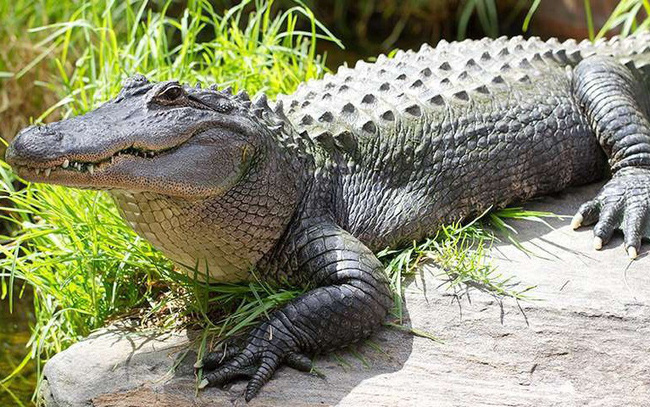

General features !!!
Crocodiles are large aquatic reptiles that inhabit a wide area of tropical Africa , Asia , North America , South
America and Oceania . Crocodiles tend to live in slow-moving rivers and lakes, their food is quite diverse,
mainly live or dead mammals as well as fish . Some species, mainly estuarine crocodiles in Australia and the
islands of the Pacific Ocean, are known to be able to swim far out to sea.
Large crocodiles can be very dangerous to humans. The estuarine crocodile and the Nile crocodile are the most
dangerous, killing hundreds of people each year in parts of Southeast Asia and Africa. The short-snouted
crocodile and possibly the black caiman (which is endangered on the IUCN Red List ) are also dangerous to
humans.
Attack skills !!!
Crocodiles are very agile for short distances, even out in the water. They have powerful jaws and sharp teeth
for tearing flesh, but they cannot open their mouths if it is tightly closed, so there are several stories of
people surviving long-snouted Nile crocodiles by their jaws closed. All large crocodiles also have sharp and
strong claws. Crocodiles are ambush hunters, they wait for fish or land animals to approach, then attack
quickly.
After using its powerful bite, the crocodile dragged the victim into the river to drown until suffocation. Then,
to tear the bait, it grasped the piece of meat and then rotated many times to remove the meat. At first, you may
think this is difficult because there is no support, but the crocodiles don't have to worry about that: as soon
as they can smell the blood, five or six crocodiles swam to express their opinion. They want to share a meal,
and often their prey is torn into hundreds of pieces by its powerful jaws and violent swing.
Description !!!
Crocodiles are the most advanced of all reptiles, spawning eggs. Crocodiles have a 4-chambered heart, diaphragm
and cerebral cortex. This feature makes it considered more evolved than other amphibians. Crocodiles are
carnivores and are excellent hunters with sharp teeth that can crush their prey in an instant. Their elongated
body helps them swim faster. When swimming, they squeeze their feet close to the body to reduce water
resistance. Crocodile feet are webbed, not to use a fan, but to use for sudden rapid movements or at the
beginning of a swim. Webbed feet give crocodiles an advantage in shallow water, where land animals often pass.
Dimensions !!!
The size of crocodiles varies considerably, between dwarf crocodiles and giant saltwater crocodiles. Some
species of crocodiles can be from 5 to 6 meters long and weigh about 1,200 kg. However, at birth, crocodiles are
only about 20 cm. The largest crocodile species is the saltwater crocodile that lives in Northern Australia and
Southeast Asia . According to some scientists, not a single crocodile can surpass the size of 8.64 m.